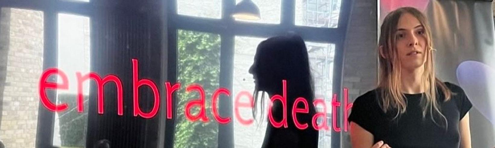
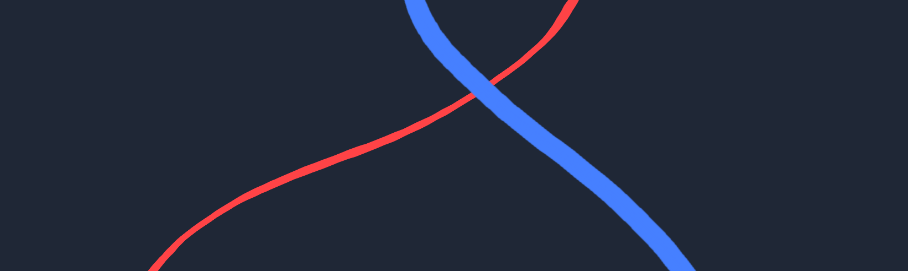
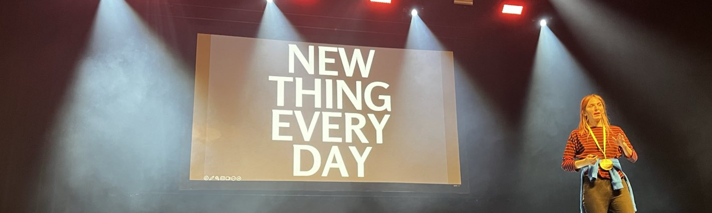
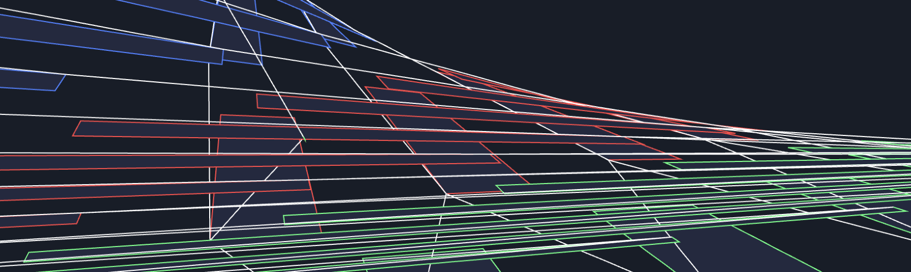
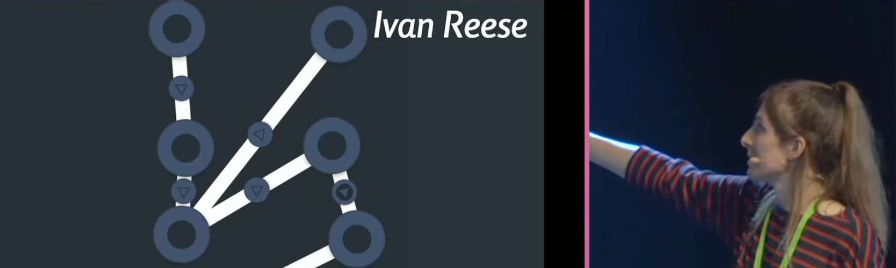

The weekly TODEPOND PONDCAST is for paying supporters only.
Please only listen / read if you've
paid
:)
Welcome back to another weekly-ish episode of the...
🐸 TODEPOND PONDCAST 🐸
It's another two parter because I missed last week because I was in Berlin for— I'll get to that.
What's new these past two weeks?
Talk season continues. In preparation for my keynote at Berlin Causal Islands, I gave a shorter, twenty minute version at London Futures of Coding two days before the real deal.
It was quite campy! Watch it here. Luckily, multiple people filmed it again, so I was able to stitch together a complete recording. I did this once before with the little Arroost demo I gave there.
The recording of the longer Berlin talk will be out at some point too.
Funnily enough, I actually prefer the shorter version! Either way, it'll be nice for people to see both. I might talk a bit about them on the next pondcast, but I don't want to give out any spoilers right now.
I've been preparing for the talk I'm giving at Onward at SPLASH in Los Angeles. I'm presenting the essay that Dave Ackley and I wrote together.
Part of the puzzle has been figuring out how to include both me and Dave in the talk, as the whole point of the essay is the "dialogue" that we have between us. And Dave's not attending in-person!
Originally, we were planning to do some sort of live video feed thing, with Dave joining remotely. But as time went on (and reality sunk in), we decided to scope it down. The current plan is to include a pre-recorded video of Dave in the middle section of the talk!
In my talks, the middle section is usually the demo segment. It's where I show the thing I've been working on. In this case, the thing I've been doing is having back-and-forth communications with Dave. So it checks out!
We created a computer collective! It's called Tentpole. It's something that me and my friend Orion Reed have been talking about for a while. And now, it's four of us, a network of four friends who want to support each other:
We've got very big very very long term plans for Tentpole, so stay tuned for a very very very long time.
(And sign up to our mailing list on the website.)
It's time for another! Here we go!
The recording of my opening keynote is out! Watch it here.
I'm really pleased with how this one went, and Heart of Clojure was a really special conference to be part of. I'm still processing it to be honest! I'm still gathering up my learnings from it.
My only regret from the talk is that I accidentally said "six years" at one point, when I was supposed to say "five years"... It doesn't sound too bad, but it got an applause, so I feel like a bit of a fraud. I muddled up my lines from the previous slide. It was supposed to be "six years" on the first slide, and then "five years" on the following slide. But I said "six years" on both.
Still, I can't quite believe I've been posting up one NEW THING EVERY DAY for over five years.....................
Elliot Evans is part of Tentpole. He's also a researcher-in-residence at Ink & Switch, like me. And within his residency, he's exploring how to visually and dynamically represent complicated things. In the past, he's done this for different kinds of SPACES. And now he's doing it for RECURSION and REPETITION.
Elliot's thing is similar, but also different, to Screenpond in various ways, so it's been really interesting to compare the two. This has led to me adding some more features to Screenpond.
Temporarily, you can see white lines on Screenpond itself to see which screens are 'children' of other screens.
And you can now hold the space bar while manipulating a screen to allow it to 'escape' a screen while still remaining a child of it. It sounds a bit abstract, because it is! I hope to try to make it more concrete as time goes on.
And of course, I've been preparing for my other talk, my presentation of Arroost at LIVE at SPLASH in Los Angeles.
So of course, I've been working through all of the feedback I got from reviewers. In previous weeks of this pondcast, I've addressed the simpler / more basic points. Now we're onto the real good / juicy stuff.
One of the recurring themes in Arroost is POWER. Who holds the power? You or the tool? Or the community? Or me? And who is control of the tool? And who should be in control?
Letting go of control/power is helpful because it means you let go of responsibility. If something sounds bad, it's not your fault! It's Arroost's fault. This removes emotional blockers and sets you free.
This can also be a downside. It means that the user of the tool doesn't have agency over it. Here's what Reviewer B said about it:
I really appreciate how Arroost explicitly grapples with the notion of power. An interesting lens to consider this might be the one taken by this paper that I quite enjoy. Here’s a snippet of the abstract:
Researchers who build creativity support tools (CSTs) define abstractions and software representations that align with user needs to give users the power to accomplish tasks. However, these specifications also structure and limit how users can and should think, act, and express themselves. Thus, tool designers unavoidably exert power over their users by enacting a “normative ground” through their tools.
The paper makes it clear that these power relations are unavoidable and something that should be reckoned with explicitly, which I think Arroost does very nicely.
And they continue:
I find the role of the community in Arroost to be fascinating as well. It’s clear that some areas are off limits — like changing the behavior of Arroost to disable the pitch bending from the passage I quoted above — but it’s also clear that Arroost as a software artifact is in dialogue with members of its community via, e.g., pull requests. What impact does Arroost being in this intermediate space have on users and their relationship to their music production software? In what ways does Arroost align with or distance itself from participatory design and its normative goals?
Reviewer C brings up this theme as well:
An essential component in emotionally unblocking design seems to be the user ceding control / granting agency to the tool, the degree to which varies widely.\ On one end, there's tldraw taking control of its marks' imperfect styling to discourage pixel-perfect alignment, or controlling how arrows are drawn so that they look nice, but otherwise leaving the user full manual control of the overall scene (ignoring makereal for the moment).
On the other end, there are tools like Electroplankton and Arroost that control the high-level coordination patterns between lower-level primitives. I'm interested in these comparisons because I wonder how the user-control-ceding nature of emotionally unblocking design may or may not translate to tools that do afford high user control.
As another example, there's LLM-powered autocomplete a la tldraw's makereal, which seems to sit somewhere in the middle of the spectrum: it may be hard to predict the suggestion, but it's still scoped to the user's prompt and some section of the edit state. How else might we navigate these trade-offs between user control and creative unblocking?
Right... I've just dumped a load of reviewer feedback on you there.
Both reviewers talk about "power" (or "control") from different perspectives. Reviewer B talks about it from a social / community point of view. Reviewer C talks about usability / functionality. But both touch on a tension between the user and creator.
My very very boring answer is that I don't know what this all means yet. I don't know how to respond to this point of feedback. It's extremely thought-provoking. It asks deep questions about what's important to us (when we're making creative tools). It's exactly the kind of conversation I want to create / prompt with Arroost.
Let's see how it goes!
Thank you for supporting all of this work!!!!! There really is a lot going on. Any support at all is greatly appreciated. I can't thank you enough for making this all happen! And no, I haven't forgotten about the video or Torn Leaf. Stay tuned. And hey, wherever you are in the world, whatever you're doing, I hope you have a great week.
Days since tode fell asleep: 647Back to the pondcast.